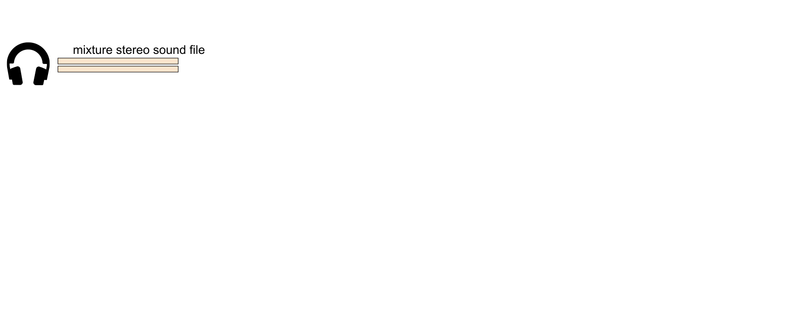
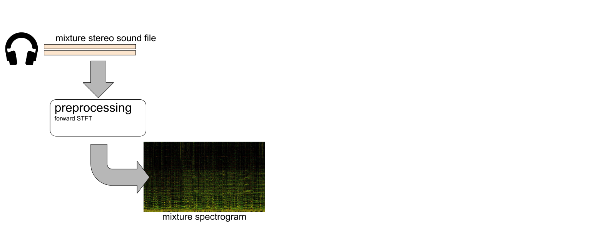
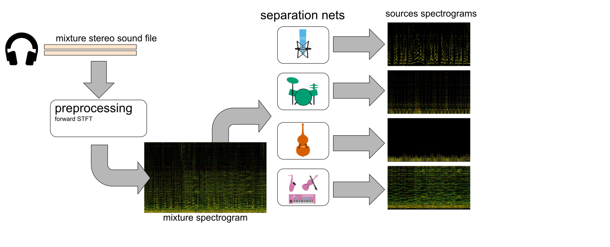
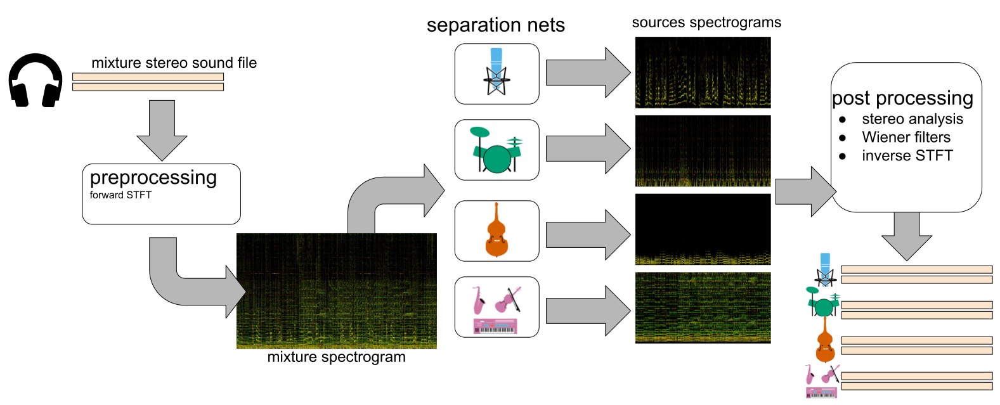

Deep learning for music separation
January 30th, 2020

Applications

- Automatic Karaoke
- Creative Music Production
- Active listening
- Upmixing (stereo $\Rightarrow$ 5.1)
- Music Education
- Pre-processing for MIR
Mixture spectrogram
Vocals spectrogram
Drums spectrogram
Bass spectrogram
Source separation: usual workflow
Source separation: usual workflow
Source separation: usual workflow
Source separation: usual workflow
Open-unmix: state-of-the-art for music demixing

- Website: open.unmix.app
- Winner PyTorch Hackathon 2019: pytorch.devpost.com
Motivation
- open-source state of the art implementation
- Leverages upon our /sigsep community effort (340, 600+ )

Deep Learning for Music Unmixing